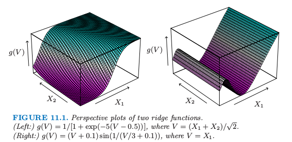

投影寻踪回归
| 原文 | The Elements of Statistical Learning |
|---|---|
| 翻译 | szcf-weiya |
| 时间 | 2017-02-07 |
在我们一般监督学习问题中，假设我们有$p$个组分的输入向量$X$，以及目标变量$Y$.令$w_m,m=1,2,\ldots, M$为未知参数的$p$维单位向量。投影寻踪回归（PPR）模型有如下形式 这是一个加性模型，但是是关于导出特征$V_m=w_m^TX$，而不是关于输入本身。函数$g_m$未定，而是用一些灵活的光滑化方法来估计及$w_m$的方向（见下）。
函数$g_m(w_m^TX)$称为$R^p$中的岭函数。仅仅在由向量$w_m$定义的方向上不同。标量变量$V_m=w_m^TX$是$X$在单位向量$w_m$上的向量，我们寻找$w_m$使得模型拟合得好，因此称为“投影寻踪”。图11.1显示了岭函数的一些例子。左边的例子$w=(1/\sqrt{2})(1,1)^T$,所以函数仅仅在$X_1+X_2$方向上不同。在右边的例子中，$w=(1,0)$

图11.1. 2个岭回归的透视图。（左图：）$g(V)=1/[1+exp(-5(V-0.5))]$其中$V=(X_1+X_2)/\sqrt{2}$.（右图：）$g(V)=(V+0.1)sin(1/(V/3+0.1))$,其中$V=X_1$.
（11.1）的PPR模型是非常一般的，因为形成线性组合的非线性函数的操作得到相当多的模型类型。举个例子，积$X_1\cdot X_2$可以写成$[(X_1+X_2)^2-(X_1-X_2)^2]/4$，高阶的乘积也可以类似地表示。
实际上，如果取任意大的$M$,合适地选择$g_m$，PPR模型可以很好地近似$R^p$中任意连续的函数。这样的模型类别称为通用近似（universal approximator）。然而这种一般性需要付出代价。拟合模型的解释性通常很困难，因为每个都以复杂多位面的方式进入模型中。结果造成PPR模型对于预测非常有用，但是对于产生一个很好理解数据的模型不是很有用。$M=1$模型是个例外，也是计量经济学中的单指标模型。这比线性回归模型更加一般，也提供了一个类似的解释。
给定训练点$(x_i,y_i),i=1,2,\ldots,N$怎么拟合PPR模型？我们在函数$g_m$和方向向量$w_m,m=1,2,\ldots,M$上寻找误差函数的近似最小值 正如在其他光滑问题中一样，我们需要在$g_m$上加上显式或隐式的限制来避免过拟合解。
仅仅考虑一项（$M=1$，并且去掉下标）。给定方向向量$w$，我们得到导出变量$v_i=w^Tx_i$.接着我们有一个一维光滑问题，而且我们可以应用任意散点图光滑器，比如光滑样条来得到$g$的一个估计。
另一方面，给定$g$，我们想要关于$w$最小化（11.2）.高斯-牛顿搜索可以很方便地实现这个任务。这是一个拟牛顿法，丢掉了Hessian阵中关于$g$二阶微分的项。可以很简单地按照下面导出。令$w_{old}$为$w$的当前估计。我们写成 得到 为了最小化右边的项，我们在输入$x_i$对目标$w_{old}^Tx_i+(y_i-g(w_{old}^Tx_i))/g’(w_{old}^Tx_i)$进行最小二乘回归，没有系数$g’(w_{old}^Tx_i)^2$并且没有截距（偏差）项。这样得到更新后的系数向量$w_{new}$.
对$g$和$w$的估计的这两步一直迭代直到收敛。在PPR模型中不止一项时，以一种向前逐步的方式来建立模型，在每一步加入$(w_m,g_m)$.
这里是一系列实现的细节。
- 尽管原则上可以使用任意光滑的方法，但如果某方法提供微分则更加方便。局部回归和光滑样条是很方便的。
- 每一步之后，上一步得到的$g_m$可以运用第9章描述的backfitting过程来重新调节。尽管这会导致最终有更少的项，但是否提高预测表现不是很清楚。
- 通常$w_m$没有被重新调整（部分是为了避免过度的计算），尽管原则上它们也可以被调整。
- 项数$M$通常被估计为向前逐步策略的一部分。当下一项不再明显地改善模型的拟合则停止模型的建立过程。交叉验证可以用来确定$M$.
有许多的应用中可以用到投影寻踪的想法，比如密度估计（Friedman等人，1984；Friedman，1987）。特别地，见14.7节中关于ICA的讨论以及它与探索型投影寻踪的关系。然而，投影寻踪回归模型在统计领域并没有被广泛地使用，或许是因为在它的提出时间（1981），计算上的需求超出大多数已有计算机的能力。但是它确实代表着重要的智力进步，它是一个在神经网络领域的转世中发展起来的，神经网络是本章接下来的内容。